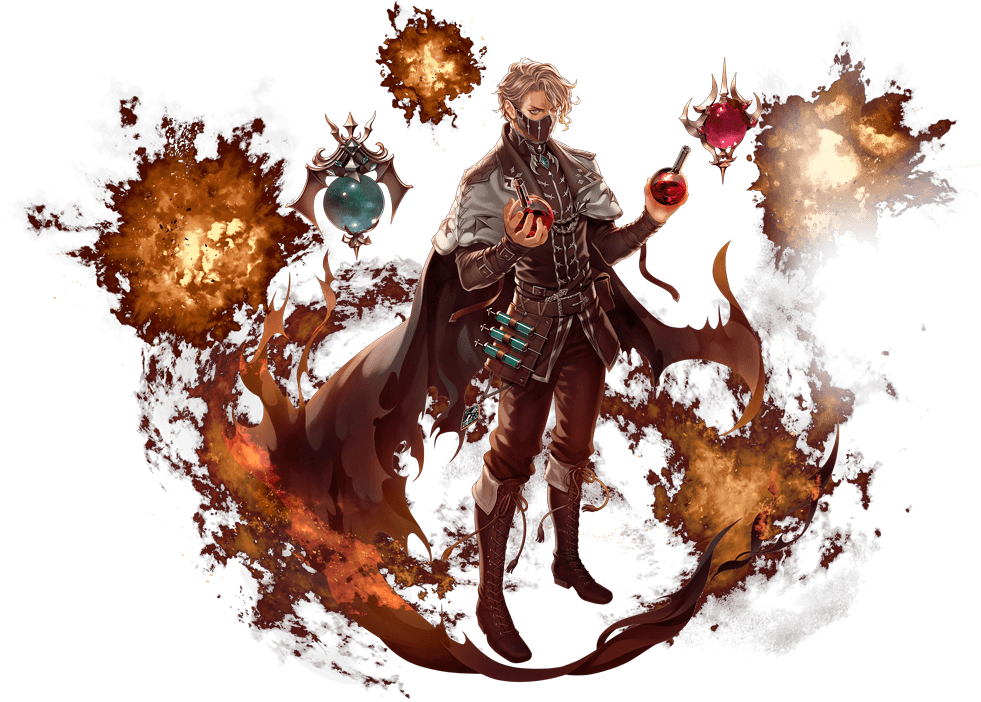
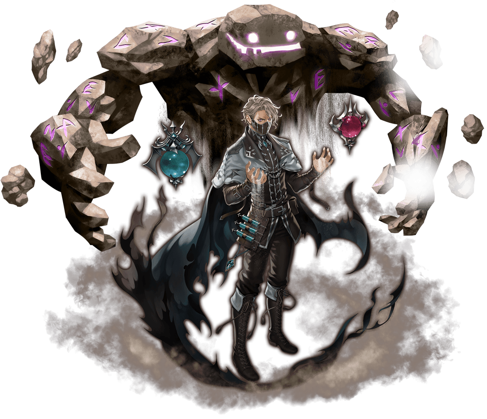
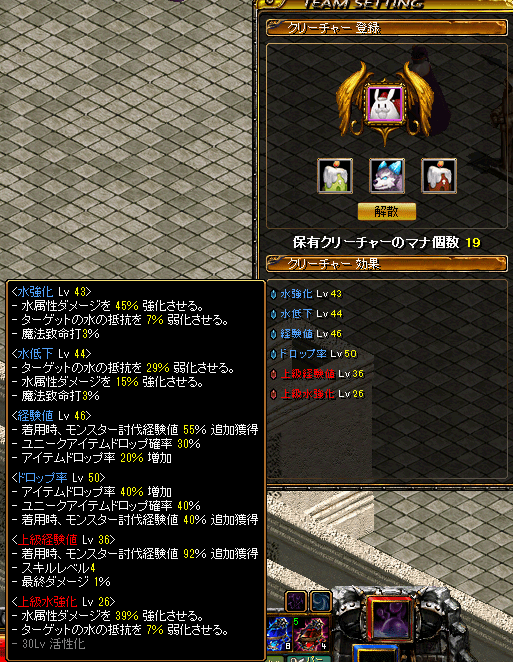
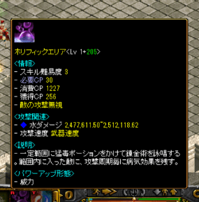
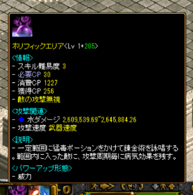

わぶこ、水ケミを綴る。 ～引退前にほら、また誰かアルケミやるかもじゃん？～
この記事を書いた人
B鯖 わぶこ
- 個人的に推しなアルケミをお勧めしたいので、今回育成及び装備更新順などをまとめてみました。 狩り場に関しては各々狩りやすい回り方などあると思うので、今回は割愛します。
【火ケミ】バーストマニアック

→ フライングエンバー状態の敵に多段火ダメージ
→ 補助武器「ミクロコスモス」が優秀な為、火弱化が稼ぎやすい
→ ～Lv300まではみんなこれ
→ フライングエンバー付与の為に一度範囲攻撃をする必要がある
→ HP回復技を覚醒する必要が無いため、範囲回復スキルを保持出来る
→ 他の覚醒に比べてCP持ちがいい多段攻撃が気持ちいい
【水ケミ】クロニクルスカラー

→最推し
→イメージは毒の池をまき散らして持続ダメで狩っていく
→最初の方は【ホリフィックエリア】
→疾病カウントが10に近くなったら【クリーピートリートメント】で大ダメージの繰り返しでもOK
→その為サマナ程ではないが全職の中でもトップクラスの移動狩りが出来る
→CT持ちゴミ 超越「魔力吸収」取得後から世界が変わる
→覚醒後、HP回復スキルがメインダメージスキルとなる
→【メディカルリキッド】は覚醒しなくてOK スキルポイントの無駄
→多分星コスの中で一番かっこいい（個人調べ）
→持続ダメージの音がうるさ過ぎてUMUドロップ音が聞こえない時がある
→魔法致命打及び魔法強打が持続ダメに乗らない為不要（あれば良いレベル）
→その為、高レベル帯での装備のお手軽さが売り
【水ケミ】クロニクルスカラー
→ ホムンクルス（召喚獣みたいなもの）を身に宿し、狩りをするスタンド使い
→ 他職にもあまりいない土属性ダメの覚醒
→ ダメージの上げ方が謎
（製錬オプション（以下OP）のペット召喚獣物理ダメージで上がったのは確認済みだが、
クリーチャーをどう強化していくべきかが謎。先駆者が居たら聞いてみて）
→単体をイグノア、範囲をリアムと分け狩りできる。単体が異常なほど高火力
→ どちらか忘れたが、スキルレベル+もしくは知識量で各々のダメ表記が上がりやすかった。作成したら検証してね）
→ リアム召喚からマスケへ変身、またアルケミに返信するとリアムの姿なしに範囲攻撃が可能。
そんなに速度変わっている感覚無かったため狩りでは不採用だった
→ CP消費は分からんちんだが多分多い
～事前情報～
・アルケミは知識職（魔法ダメージを使うキャラ）の反転職
・力比率などのOPを上げると知識の数値が上がり与えるダメージが増える
・男性職 女性専用装備のイヤリングは装備出来ないのでサブ作成時は注意！
・敏捷が稼ぎにくい為、ステータス振りや破片指で稼ぐ必要がある
・知識職はどれも魔法ダメ400％ 属性ダメ400％ 魔法弱化120％
・属性弱化120％を目指していく（属性弱化→魔法弱化→魔法ダメ→属性ダメの順が装備更新上稼ぎやすい）
・被ダメしても死なないことを前提にしています。天上報酬から取ろうな
Q.初期の頃の装備はどうすればいいの？
| 武器 | 協会の優雅な錬金石 ～775UMU入手まで使える 魔弱10％が優秀 OPは攻撃速度でOK 他職から羨まれる速度1.00の武器 |
|---|---|
| 冠 | 協会の優雅な冠 ～精霊王の冠Nx及び予知の棺入手まで OPにCP効率など付けたい場合は精霊王につけよう） |
| マント | 協会の優雅なマント ～Lv750遺物入手まで魔ダメ30％+スキル+2が優秀 |
あとは何でもOK！
簡単に死なないように防御、HPが上がるベルト、鎧、ブーツも視野に。
コインに余裕があるのなら協会指輪を交換し属性ダメ底上げも視野にいれてみよう！
Q.中盤からは？ ～Lv950あたりまで
800DXUや775UMU、T比率指を視野に入れてみよう！
| 補助 | 【死に飲み込まれた生】水弱化30％、スキル+3とアルケミ補助の中では優秀 |
|---|---|
| 首 | 【迷える追跡人】CP獲得ボーナス15％で差をつけろ！ |
| 頭 | 【精霊王の冠】Nxが鬼つよ 補助と合わせて属性弱化75％！ 【イリスの冠】 魔弱要員 他で属性弱化120％を稼げていれば候補へ |
| マント | なんでもいい 遺物コンテンポにする予定 |
| 腰 | 【緩帯】次元サキュバスや地下墓地B2Fなどでの被魔ダメ吸収30％が効いてくる。ただし反転職の為OPが付けにくい |
| 手 | 【循環の連続】800DXU優秀賞 【栄光の手袋】入手まではズッ友。なければユニコーンの腕輪もあり |
| 鎧 | 死ななきゃなんでもいい!回避セーフケージかクルブームの皮で火属性ダメ吸収で乗り切れる |
| 足 | 【緩帯】次元サキュバスや地下墓地B2Fなどでの被魔ダメ吸収30％が効いてくる。ただし反転職の為OPが付けにくい |
| 腰 | 【バッサドラッヘ】ぶっちゃけ荒地まで履ける。【忍耐】付けても装備要求Lv772、Nx1解放で717とコスパ〇 |
あくまでオススメ。属性弱化だけ考えていればOK
オススメUMUと遺物
| 武器 | 【凝縮されたロシペルのマナ】【凝縮されたロシペルのマナ】 ようやくここで協会武器からちゃんとした武器へ。火ケミや土ケミでも関係なしにどちらでもいい。 好みでOK。金鯖からアルケミを始めた私はロシペルでした。 （強打型に憧れていた為だが前述の通り致命打強打はあれば良いレベルでいらない） 装備レベルを考慮しなくてはだが、「魔力の」OPを1つ入れたいかも。 |
|---|---|
| 頭 | 【予知の棺】属性弱化66％の化け物コイツを入手したあたりから魔法弱化を稼ぐように装備を更新していくと良い。 |
| 腰 | 【アイルスの執着】魔法弱化要因 知識比+1/3は死にOP |
| 手 | 【栄光の手袋】魔法弱化要因 魔法致命打オイシイ＾ｐ＾ |
| 鎧 | 【ポケット付きコート】高レベル帯必須の命中補正無視力が常備。 力比+1/2もとてもイイ。4解放目に最終ダメージ15％とぶっ壊れの分解UMU職鎧代表 |
| マント | 【遺物コンテンポラリーアルチザン】OPは力比魔力のRSでOK 荒地あたりからは回避優先にしたいので知恵比にすると反転して敏捷比+1/2稼げて◎ |
Q.中後半は？ ～Lv1350
クリーチャーで属性弱化を稼ぎつつ、魔弱や魔ダメを整えていこう！
装備については、ぶっちゃけ中盤オススメUMUで事足ります。
強いて言うなれば、足をT辛苦フェノンにして、マントを好きなOPのオーラクロークにするくらい。
白狐の玉（B鯖100本換算）を導入出来れば、なお良し。荒地まででは贅沢品かも。
また、頭を1100DXUの魔導戦士にするのであればマントを早めに作成しておくと良い。属性ダメ88％は魅力的。
導入するのであれば、クリーチャーで水強化50、水弱化50稼ぐと水属性弱化45％稼げるので、
クリーチャー45％ +補助30％ +オーラクローク10％ +フェノン15％ +白狐の玉35％の計135％と
余剰分をクリーチャー厳選分の余裕に回せるためオススメ。
やればやるほどダメージ表記がぐんぐん伸びるので、育成していて楽しいキャラでもある。
Q.装備は大体わかった、あとなにやればいいの？
とにかく経験値を効率よく稼ぐを目標に狩ると◎
Lv.1250～ヤティ入りからはどうしても弱化120％ずつ確保が必須になる為、
クリーチャー育成に専念してました。
現在Lv1576ですがこんな感じ↓

Nクリーチャーを3体3OP厳選するとこのくらいにまで育て上げられます。
Q.恩寵は何にすればいい？
水にしています。多分ダメージ上がっている。
ただし、OPの「恩寵の」4か所で発動する恩寵強化後の追加ダメージは、ホリフィックの初段にしか発動しません。
致命打や強打を必要としない、水ケミとしては不要なOPになります。
知識めっちゃあって荒地あたりをワンパンしていきたいという方にはアリかも知れませんが、別OP付ける方がお得な気がします。
Q.補助に職スキル付く？
付きません。
そういう意味ではゴミ補助です。
指及び首あたりのOPで稼ぎましょう。
Q.スキルレベルと知識量の比率って どのくらいが理想なの？
スキル：知識量＝1：100くらいが目安です。
例）スキルレベル+200と知識20,000程度
スキルレベル+205と知識22,000程度、ギルド旗+魔力水でこのくらいの表記になります。
この程度でもLv1550～ウポスマイヤーは1発ホリフィックを撒いて移動で十分リポップに間に合うレベルで狩れます。(トラちゃんは2発)

Q.他にも優秀なスキルってあるの？
あります。スキルレベルを上げるべき順に紹介すると･･･
【ライジングカレント】
ブローインタイプのスキルの効果UPをするというとてつもないリアクションスキル
リアクションスキルはON/OFFで切り替えられ、最大同時に2個までしか発動させられないが、
基本ライジングカレントともう一個になる。
アルケミからバフ貰ってラッキーとなる方も居るかもしれないが、
バフかけた本人が近くにいないとライジングカレントの効果が届かず、薄い効果のまま狩ることになるので注意。
【ブローイン：ゼフィーロ】
狩り時の基本バフとなるスキル。
狩り前にゼフィーロをしてから狩る→効果が切れる前or切れたら再使用し魔法ダメ威力を底上げできる優秀な子。
最大+50％
前述の表記にゼフィーロを重ねると、このくらいまで表記が上がる。
スキルレベル100で効果最大の50.00％増加、以降は持続時間のみ上がっていく。
ただし、魔ダメ400％上限と重複しているかは不明。
400％超えてるはずなので恐らく別枠で上がっているはず。

【ブローイン：ゼフィーロ】
移動速度が上がるブローイン系スキル
主に対人などで活躍する、ウィザードのヘイストと効果が重複するスキル。
ただし、水ケミのホリフィック（別名疾病）は通常Gv及びアリーナで禁止されていることがほとんどな為、
攻城戦でしか活躍は出来ない模様。
また、ブローイン系スキルは1つまでしか効果を発揮しない為、
ゼフィーロ後にスウィフトをかけても移動速度のみUPということになる。狩り時要注意。
【ディストラスト】
魔法属性抵抗を上げるアクティブスキル
対人戦なんかに属性割れを防ぐ用途で使用。
【ハーフヴァンパイア】
一定時間でCPを消費して知識と知恵をお気持ち程度上げてくれるスキル。
狩りはこれとライジングカレントでOK
【プロモートリフォーム】
ポーション回復効果及び速度を上げるパッシブスキル。
恐らく他職からは羨ましがられるであろうスキル。上限+50％
Q.移動狩りがすごいって言うけどどんな感じなの？
こんな感じ【場所:ヤティカヌ暁の森林・適正Lv1500～1550】
ダメージを与えた後～遮蔽に移動するまでの間、1秒間毎に持続ダメ+疾病レベルが上がっていきます。
移動狩りの際は直線上もしくは大回りで移動するとホリフィックの範囲に居る敵の疾病レベルが上がりやすくなる。
結果、持続ダメの元が大きくなり狩りスピードが上がる為、狩場を何回か周回してコースを見て慣らしておくと良い。
とりあえずざっとではありますが、まとめてみました。
これってどうなの？などあれば随時質問なども答えられる範囲で受け付けております！
追記があり次第どんどん追加更新していきます。
この用語が分からない！などあればお母さんやお父さん、Gメンに聞いてみてね！
次どのキャラ作ろうかなぁって時に参考になれれば幸いです。
みんな水ケミやろうぜ！！！